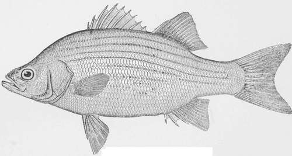
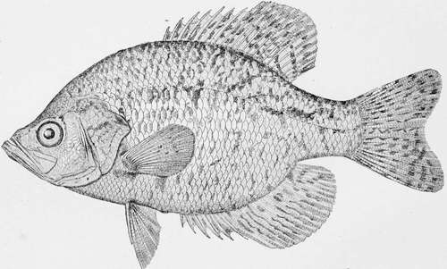

The Calico Bass-Pomoxis Sparoides (Lacepede)
Description
This section is from the book "American Game Fishes", by W. A. Perry. Also available from Amazon: American Game Fishes: Their Habits, Habitat, and Peculiarities; How, When, and Where to Angle for Them.
The Calico Bass-Pomoxis Sparoides (Lacepede)
Description
Body oblong, elevated, greatly compressed, the depth being nearly half the length, the head one-third; profile more regular than in the Crappie, the projections and depressions being less marked; head much deeper and shorter than in the Crappie, the mouth considerably smaller, the mandible being considerably shorter than pectorals ; snout projecting, forming an angle with the descending profile; fins very high; anal rather larger than dorsal, its height being from one-fourth to one-fifth of the length of the fish without caudal-fin; dorsal VII, 15, varying to VIII spines, very rarely VI; anal VI, 18, varying to V, 17; lateral line with 40 to 42 scales; color a bright silvery olive, mottled with clear olive green, the dark mottlings gathered in irregular small bunches, rather than in lines or bars, and covering the whole body and the soft rays of the anal as well as these of the caudal and dorsal fins; usually a dusky opercular spot. This species reaches a length of a little more than a foot.
Closely allied to the Crappie, but loving colder and clearer waters, and therefore a finer, firmer, more deeply colored and more vigorous fish, is the Calico Bass.
White Bass-Roccus chrysops.
The range of this species extends from South Carolina north-westward to Kentucky, Vermont, Iowa and the Great Lakes, being almost identical with that of the Rock Bass. Many fishermen fail to distinguish this from the Crappie, and Dr. Henshall has proposed to spread the same name over both, calling this the Northern Crappie. It has, however, good names of its own, and the observant angler will notice that while the true Crappie has but six spines in its dorsal fin, the Calico Bass has seven, and its anal fin is mottled and spotted like the dorsal, while in the Crappie this fin is almost plain. In Lake Michigan, where this fish is abundant and the Crappie is not found at all, the name of Bar-fish is in common use. In Ohio and Illinois, besides the appropriate name of Calico Bass, there are others of less pertinence. Strawberry Bass, Grass Bass, Bitter Head and Big Fin Bass are among the best of them, but it will be best to let them all die away through disuse.
The Calico Bass is an excellent game fish, rather superior to the Rock Bass, inasmuch as it is handsomer and usually grows larger, and shows a good deal of eagerness and spirit.
Of all our American Bass-like fishes, this will probably prove to be the one best adapted for artificial ponds, especially those with weedy or mucky bottom and clear water.
The case for the Calico Bass is thus strongly put by Dr. Jared P. Kirtland, as quoted by Dr. Goode:
"The Grass Bass has not hitherto been deemed worthy of consideration by fish culturists; yet from a long and intimate acquaintance with its merits, I hesitate not to pronounce it the fish for the million. It is a native of our western rivers and lakes, where it usually resorts to deep and sluggish waters; yet in several instances, where it has found its way into cold and rapid streams, and even small-sized brooks, by means of the constructing of canals or by the hand of man, it has adapted itself to the change, and in two or three years stocked to overflowing these new locations. As a pan-fish, for the table, it is surpassed by few other fresh-water species. For endurance and rapidity of increase it is unequaled. * * The Grass Bass is perfectly adapted to stocking ponds. It will thrive without care in very small ponds of sufficient depth. * * It will in nowise interfere with the cultivation of any number of species, large or small, in the same waters. It will live harmoniously with all others, and while its structure and disposition restrain it from attacking any other but very small fry, its formidable armature of spinous rays in the dorsal and abdominal fins will guard it against the attacks of even the voracious pike."
Calico Bass, or Strawberry Bass-Pomoxys steroide*.
By David Starr Jordan.
Continue to: